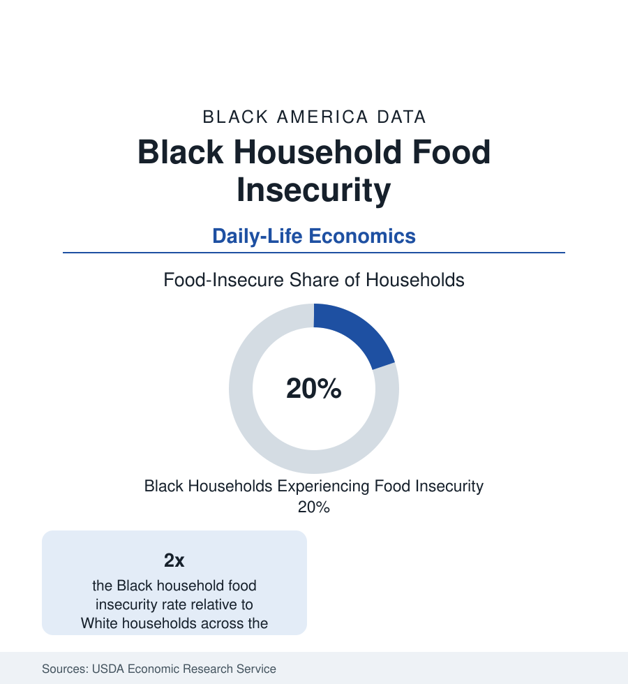

Black Census
Food Insecurity in Black Households: One in Five
About one in five Black households experiences food insecurity in the USDA's annual measurement — double the national rate. The food security data.

About one in five Black households in the United States is food insecure — the USDA's term for lacking consistent access to enough food for an active, healthy life — a rate roughly double the White household rate in every year of the Economic Research Service's annual measurement. The statistic is the income and wealth files translated into meals: children in roughly one in five Black households live with food insecurity in the survey data. This article reports the food security file.
The Measurement and Its Levels
The USDA's scale, built from the Census Bureau's Current Population Survey supplement, divides insecurity into its severity bands: low food security (quality and variety compromised, meals stretched) and very low food security (meals skipped, intake reduced — hunger in the plain sense, affecting roughly a third of the food-insecure total). Black households record elevated rates at both levels, with the very-low share following the same two-to-one geometry. The trend lines are the macroeconomy's shadow: the rate rose through the Great Recession to its early-2010s peak, declined through the long expansion, spiked and was suppressed in the pandemic's transfer era (the expanded benefits period measurably held the line — the rate's stability in 2020–21, against the unemployment spike, is the policy literature's Exhibit A for transfer design), and rose again in the inflation years as the expansions lapsed. The Household Pulse's more frequent readings trace the same population's food insufficiency between the annual benchmarks.
The Geography: Access and the Grocery Map
Food insecurity is not only an income measure; the access research gives it a map. The USDA's food-access data (the successor to the 'food desert' framework — low-income tracts distant from supermarkets) place the access-poor population disproportionately in the Black districts of the city profiles and the rural Black Belt, where the dollar-store economy of the retail profile is the food infrastructure and the full-service grocer a drive away. Feeding America's Map the Meal Gap models the county-level rates — the Black Belt and Delta counties at the distribution's top — and its food-price layer prices the same basket higher in exactly those counties. The transportation data bind the system: the carless-household rates of the next profile convert distance into time, and time into the corner-store diet whose health consequences the diabetes and hypertension files record. The access literature's caution is part of the record: new supermarkets alone move diet measures modestly in the evaluation studies — income is the master variable, access its amplifier.
The Response System's Data
The response infrastructure is measured as carefully as the problem. SNAP — the program reaching roughly one in four Black Americans in a given year in the participation data — is the system's spine: its benefit adequacy (the Thrifty Food Plan's 2021 re-evaluation raised benefits on the evidence that the old plan could not buy the diet it priced), its participation gaps (eligible non-participation concentrated among the elderly and the working), and its racial composition (Black households form a share of caseloads in the high twenties in the USDA characteristics data). The charitable layer — Feeding America's network moving billions of pounds annually, the Black church food ministry as its neighborhood capillary system (the philanthropy profile's benevolence economy in operation) — and the school-meals system (the education file: free-meal eligibility and the Community Eligibility Provision's universal-meal schools, heavily used in Black districts) complete a response architecture whose adequacy is graded annually by the rate itself.
Children, Seniors, and the Sharp Edges
The distribution's edges are the data's most cited cells. Households with children record higher insecurity (the adults' shielding of children visible in the severity composition — child-level very low food security is rarer than the household rate, at a measurable cost to the adults). Black seniors' food insecurity has risen across the series in the Feeding America senior analyses — fixed incomes against food inflation, the SNAP senior participation gap (the lowest of any age group) the standing policy failure. The disability households of the disability profile record the highest rates of any demographic cut in several USDA editions — the file's intersecting maximum. College students' food insecurity (the campus surveys' third-to-two-fifths rates, Black students highest) extends the file onto the campuses of the education section.
Reading the Food Data
Food insecurity is the poverty file with the abstraction removed: not an index but an empty refrigerator, counted by the government's own surveyors at one in five Black households in the richest food-producing nation in history. Its doubling ratio against White households is the income distribution's, its geography the retail map's, its trend the safety net's report card — read it as all three at once.
More in Black Census
The Black Population of the United States: Size, Definitions, and Distribution
The Black population of the United States totals 52.8 million — 15.4 percent of the nation. How the Census Bureau defines and counts the population, and where it lives.
Black Median Household Income in the United States
Black median household income stands at $56,490 in the Census Bureau's annual income report — how the figure is measured, how it compares, and what drives it.
The Black Poverty Rate: Levels, Children, and the Long Trend
The official Black poverty rate is 17.1 percent — against 11.1 percent nationally and 7.7 percent for non-Hispanic White Americans. How poverty is measured and what the data show.
Source: USDA Economic Research Service, Household Food Security in the United States annual reports; Feeding America Map the Meal Gap; Census Bureau Household Pulse Survey.